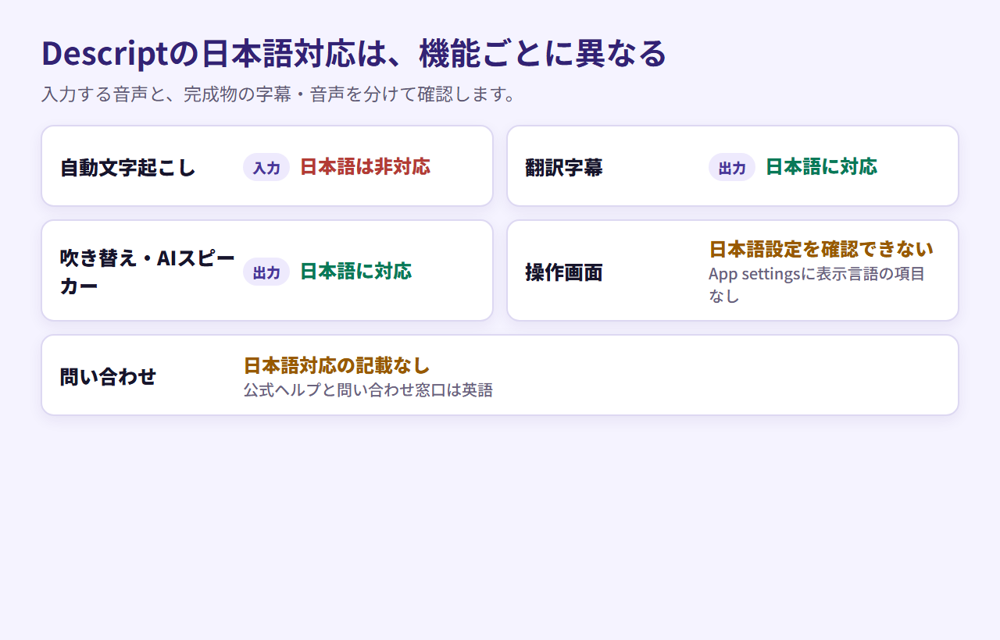
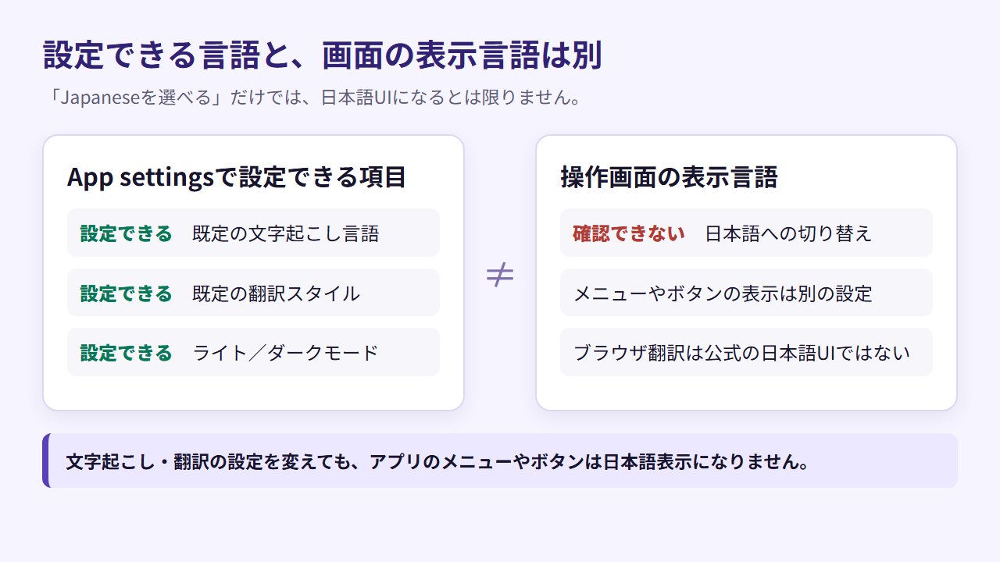
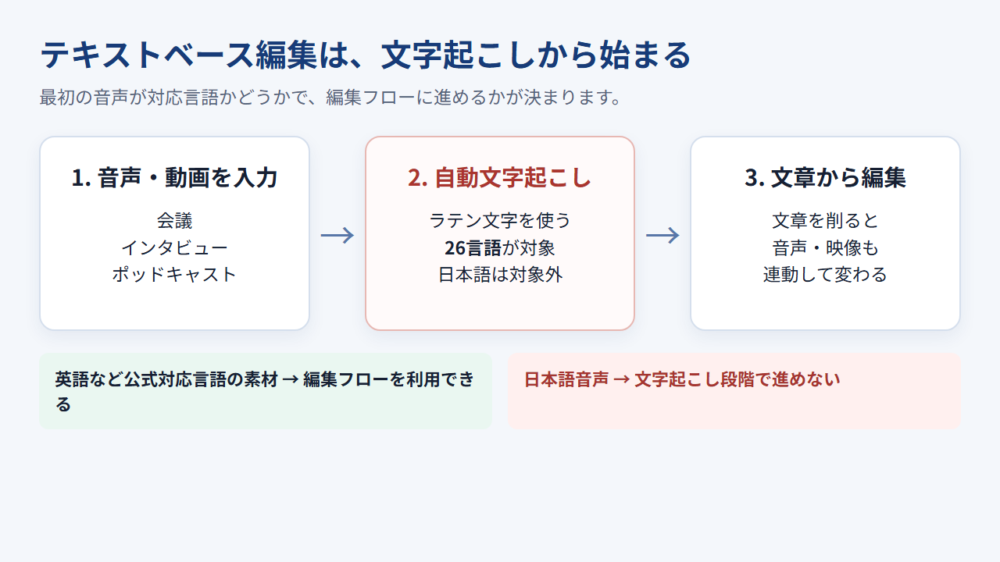
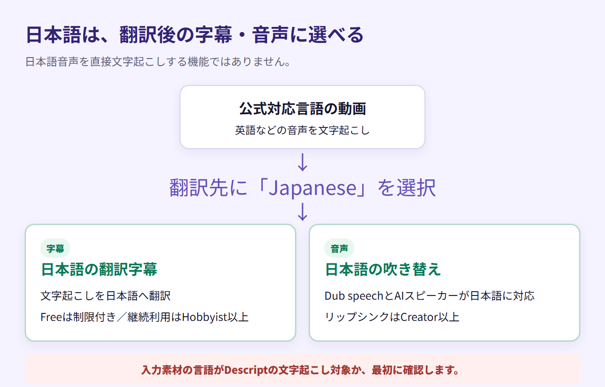
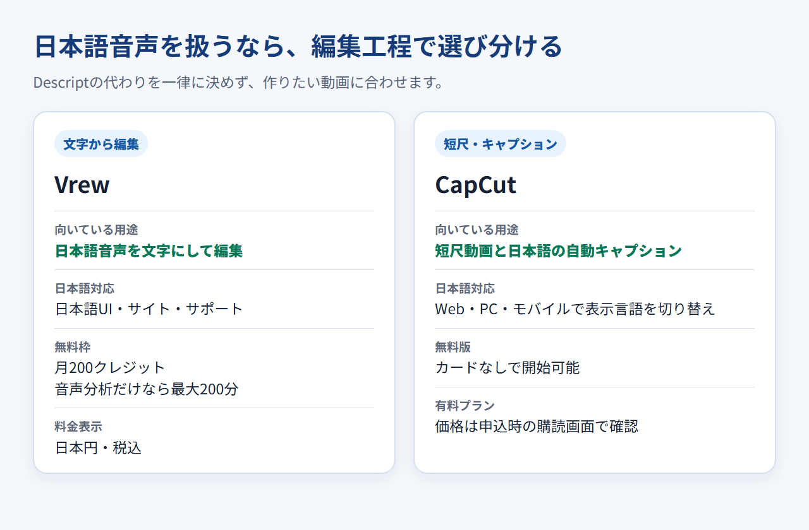
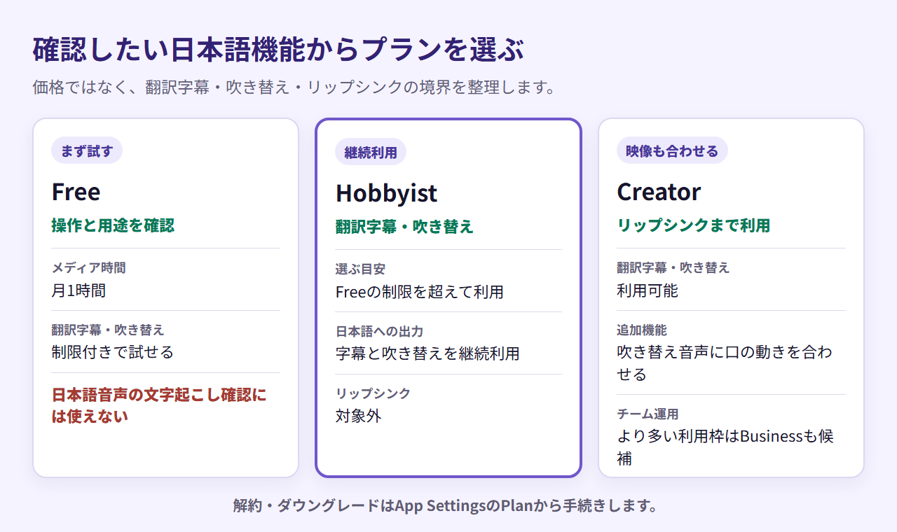

Descriptは日本語で使える？文字起こし・字幕・UI・サポートの対応範囲
Descriptは、音声から作った文字起こしを編集すると、動画や音声も連動して変わるテキストベースの編集ツールです。ただし、「Descriptは日本語に対応している」という説明だけを見て導入を決めるのは早計です。
Descriptでは、日本語音声の自動文字起こしには対応していません。一方、公式対応言語の動画を日本語の字幕や音声へ変換する機能では、日本語を選べます。 操作画面と問い合わせ窓口については、日本語対応の案内がありません。
ここで扱うのは、公開されている仕様を機能別に整理した内容です。操作感や日本語の認識精度を試した評価ではありません。
文字起こしと翻訳・吹き替えでは対応言語が異なります。導入前に、目的の機能がどのプランで使えるかを確認してください。
結論：Descriptの日本語対応は機能によって異なる
自動文字起こしは日本語音声に非対応ですが、翻訳字幕と吹き替えでは日本語を選択できます。 UIと問い合わせ窓口では、日本語対応を確認できません。
日本語対応を5つの領域に分ける
「日本語対応」は、一つの可否だけでは用途に合うか判断できません。次の5領域に分けて考えると、ずれを避けられます。
- 自動文字起こし：日本語は非対応
- 翻訳字幕：日本語に対応
- 吹き替え・AIスピーカー：日本語に対応
- 操作画面：日本語へ切り替える設定は確認できない
- 問い合わせ：日本語対応の記載なし

文字起こしには対応していませんが、Descriptには日本語を扱える機能もあります。素材の言語と、最終的に作りたい字幕・音声の言語は分けて考える必要があります。
Descriptが候補になる人・ならない人
日本語で収録した会議、インタビュー、ポッドキャストを文字に変え、その文章を削りながら編集したい人には向きません。テキストベース編集の元になる文字起こしを、日本語音声から作れないためです。
一方、Descriptが対応する言語で作られた動画に、日本語の翻訳字幕や吹き替えを付けたい人には候補になります。海外向けに制作した素材を日本語化する用途なら、日本語機能を活用できる余地があります。
Descriptの操作画面は日本語化できる？
公式ヘルプのApp settingsには、表示言語を日本語へ切り替える項目がありません。 文字起こし言語や翻訳スタイルの設定はありますが、UIの言語設定とは別です。
App settingsに表示言語の設定はない
App settingsのAppearanceで切り替えられるのは、ライトモードとダークモードです。メニューやボタンの表示言語を選ぶ機能ではありません。
そのため、Descriptの画面は公式設定で日本語表示へ切り替えられません。日本語UIが必要なら、この制約を前提に比較してください。
文字起こし言語の設定はUI言語と別
設定できるのは、既定の文字起こし言語と既定の翻訳スタイルです。前者は音声をどの言語として文字にするか、後者は翻訳の表現をどう整えるかを指定します。
どちらを変更しても、アプリのメニューやボタンは日本語表示になりません。「Japaneseを選べる場所がある」ことを、日本語UIの設定と取り違えないようにしてください。
ブラウザ翻訳は公式の日本語UIではない
補助としてブラウザの翻訳機能を使っても、Descript公式の日本語UIにはなりません。適用できる画面や編集操作への影響はブラウザ、OS、画面の状態で異なるため、ここでは評価しません。

日本語音声は自動文字起こしできない
自動文字起こしはラテン文字を使う26言語が対象で、公式には日本語に対応していません。 日本語音声を文章へ変換し、その文章を編集して動画を仕上げる用途には向きません。
公式の対応言語一覧に日本語は含まれない
自動文字起こしの対応言語は英語、フランス語、ドイツ語、スペイン語など26言語です。公式ヘルプでは、日本語・中国語・ロシア語は未対応の例として明記されています。
日本語については「英語より認識精度が低い」のではなく、対応言語の対象外です。日本語音声をアップロードして文字起こしする前提では選べません。
テキストベース編集への影響
Descriptでは、文字起こしされた文章を削ると、該当する音声や映像も連動して編集されます。この流れは、日本語音声から文字起こしを作れないため、日本語素材では利用できません。
インタビューの不要部分を文章から削る、話者ごとに発言を確認する、台本のように音声を編集するといった作業を日本語で行いたいなら、文字起こし段階から対応するツールが必要です。
公式対応言語の素材なら使える範囲
英語など公式対応言語の素材であれば、文字起こしを起点に編集できます。その後、日本語字幕や日本語音声へ翻訳する流れは別機能として用意されています。

判断の分かれ目になるのは、完成物の言語よりも最初の音声の言語です。
日本語の翻訳字幕と吹き替えは利用できる
日本語は、翻訳字幕と吹き替えの対応言語に含まれます。 公式対応言語の素材を、日本語の字幕や音声へローカライズしたい場合に検討できます。
翻訳字幕では日本語を選べる
翻訳字幕の対象言語にはJapaneseが含まれています。元になる動画を文字起こしし、翻訳先として日本語を選びます。
ただし、入力素材の言語がDescriptの文字起こし対象であることが前提です。この機能を、日本語音声から日本語字幕を作る機能と取り違えないでください。
吹き替えとAIスピーカーも日本語に対応
Dub speechでも、対応言語としてJapaneseを選び、日本語の吹き替え音声を作成できます。AIスピーカーも日本語に対応しています。
翻訳字幕と吹き替えはFreeでも制限付きで試せます。継続利用の最低有料プランはHobbyistで、映像の口の動きを吹き替え音声に合わせるリップシンクはCreator以上です。
文字起こし対応と混同しない
日本語を出力先に選べることと、日本語音声を入力して文字起こしできることは別です。Descriptを検討するときは、まず入力素材の言語が対応しているかを確かめ、その後で日本語字幕・吹き替えに必要なプランを選びます。

翻訳字幕・吹き替え・リップシンクは利用できるプランが異なります。使いたい機能を先に決めて、プランを選んでください。
日本語サポートと日本からの支払いを確認する
公式ヘルプと問い合わせ窓口は英語で、日本語による問い合わせ対応の記載はありません。 日本からセルフサービスプランを契約できますが、カード決済と請求書払いは条件が異なります。
公式ヘルプと問い合わせは英語
Descriptには公式ヘルプセンターと問い合わせ窓口があります。ただし、日本語のヘルプページや、日本語で返信を受けられるという案内は確認できません。
導入後の問い合わせを日本語だけで完結させたい人は、この点を前提に比較してください。英語の窓口があるというだけでは、日本語で返信を受けられるか判断できません。
日本から使える支払い方法
Hobbyist、Creator、Businessなどのセルフサービスプランは、クレジットカードとLink by Stripeに対応しています。所在地や通貨によっては、Apple PayやGoogle Payなどのローカル決済が表示される場合もあります。
公式情報では、日本発行カードの個別ブランドを確認できません。特定のカードが使えるかどうかは、申込画面に表示される方法で判断してください。
請求情報と請求書払いの違い
請求先情報とTax IDは、請求が確定する前に登録できます。ただし、請求情報を登録できることと、銀行振込などの請求書払いに対応することは同じではありません。
請求書払いはEnterprise契約のみです。セルフサービスプランでは、カードまたはチェックアウトに表示される決済方法を使います。消費税や経費処理の扱いは契約状況で変わるため、税理士に確認してください。
日本語の文字起こしを重視するならVrewかCapCut
Vrewは日本語音声を文字にして編集したい人向けで、CapCutは短尺動画と日本語の自動キャプションを重視する人向けです。 優劣ではなく、編集工程に合わせて選び分けます。
Vrew：日本語音声を文字から編集したい人向け
Vrewは日本語UI、日本語サイト、日本語サポートを備えたデスクトップアプリです。Freeでは月200クレジットが付与され、音声分析にすべて使う場合は最大200分の文字起こしを試せます。料金は日本円の税込表示です。
Vrewの料金ページには、日本語音声を文字起こしして編集したい人向けの無料枠と、日本円の有料プランがまとまっています。
CapCut：短尺動画と自動キャプションを重視する人向け
CapCutはWeb、PC、モバイルで表示言語を切り替えられ、日本語の自動文字起こしと自動キャプションに対応しています。無料版もあり、クレジットカードなしで始められます。
有料プランは地域、デバイス、プロモーションによって価格が変わり、固定の世界共通価格は公開されていません。申込時の購読画面に表示される価格で判断します。
日本語UIで短尺動画を編集し、自動キャプションを付けたい人向けです。

無料プラン・料金・解約条件を確認して始める
Descriptはクレジットカード不要のFreeで、月1メディア時間を利用できます。 この無料枠は日本語文字起こしの検証用ではありません。公式対応言語の編集や、日本語への翻訳字幕・吹き替えが目的に合うかを確かめられます。
Freeで確認できること
Freeでは、公式対応言語の素材を使った編集の流れや、日本語表示へ切り替えられない画面で操作を続けられるかを確認できます。翻訳字幕と吹き替えも制限付きで試せます。
翻訳字幕・吹き替えに必要なプラン
Freeの制限を超えて翻訳字幕や吹き替えを継続利用する場合はHobbyist、リップシンクも必要ならCreatorが選択肢です。Businessは、より多い利用枠やチーム運用を想定しています。この記事では日本語機能の違いに絞り、各プランの金額や月払いとの差は料金記事へ分けます。
解約・ダウングレード・返金の注意点
解約またはFreeへのダウングレードは、App SettingsのPlanから手続きできます。手続き後も、現在の請求期間が終わるまでは有料プランを使えます。
プラン購入の返金申請は請求日から48時間以内です。追加Editor席は7日以内、追加Media MinutesとAI Creditsは返金対象外で、途中解約やダウングレードによる未使用期間の日割返金もありません。

登録前に、Freeの上限、翻訳・吹き替えに必要なプラン、解約条件を確認してください。
まとめ：日本語音声の編集か、日本語への翻訳かで選ぶ
文字起こしから編集まで日本語音声で進める用途には、VrewやCapCutが合います。公式対応言語の動画を日本語字幕や日本語音声へ変換する用途では、Descriptも選択肢に入ります。
Descriptを選ぶ前の最終チェック
選ぶ前に確かめたいのは、次の5点です。
- 日本語音声の自動文字起こしは非対応
- 日本語の翻訳字幕と吹き替えには対応
- 公式設定では日本語UIへ切り替えられず、公式ヘルプと問い合わせ窓口は英語
- 翻訳字幕と吹き替えはFreeで制限付き、継続利用の最低有料プランはHobbyist、リップシンクはCreator以上
- 日本語文字起こしならVrew、日本語の自動キャプションならCapCutも候補
日本語が入力側なのか出力側なのかを決めると、候補を絞れます。「日本語を扱えるか」という一つの条件だけでは、必要な機能を見分けられません。
日本語への翻訳字幕や吹き替えを使いたい場合は、必要なプランと利用条件を確認してください。